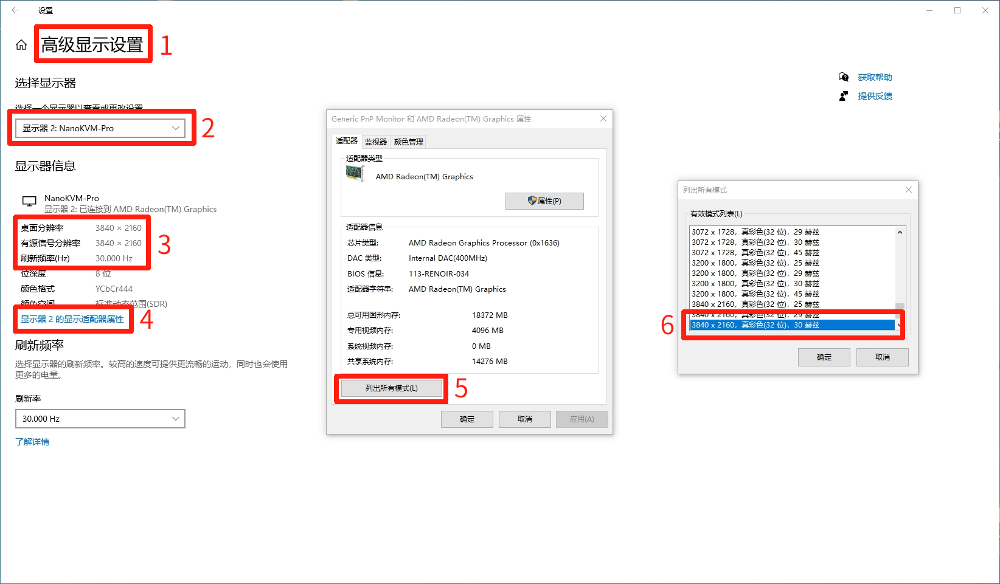
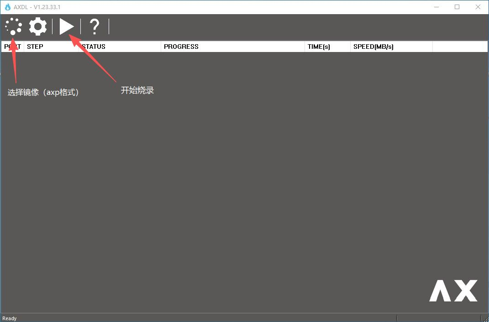
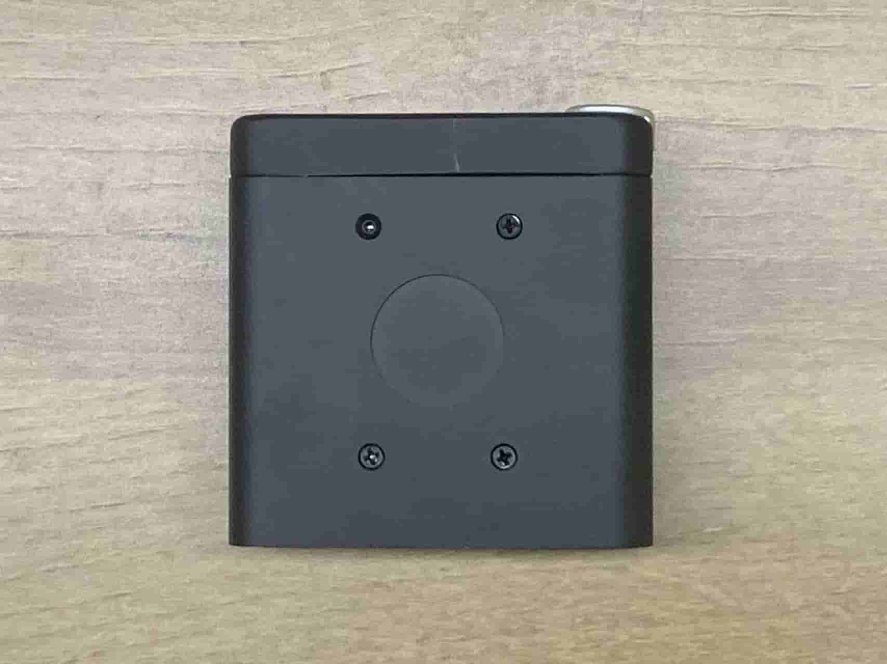

中文
中文常见问题
更新解决问题
NanoKVM Pro 会不定期更新应用，一些问题可能在新的应用中已经解决，所以请首先尝试更新应用
系统启动
绿色LED闪烁
绿色LED是 NanoKVM Pro 的电源指示，如果连接了供电能力较弱的电源，绿色LED会因电压不稳定而无法启动，请拔掉所有供电并更换电源
切换 PiKVM 后无法正常工作
应用版本为 1.2.9 的部分设备在切换到 PiKVM 后可能会出现 PiKVM 反复重启的问题，请在 NanoKVM 的 Web 界面将应用版本更新至 1.2.10 或以上版本以解决该问题。
如果已经无法切换回 NanoKVM, 请参考镜像烧录方法重新烧录 NanoKVM-Pro 镜像
网络相关问题
WiFi 版本 NanoKVM-Pro ATX/Desk 缺少WiFi配置界面
请在设置->检查更新中更新至1.2.13或以上版本即可解决
如果因网络问题无法在网页更新，可以尝试通过重烧镜像方式解决：先下载1.0.13版本及以上的镜像,然后根据操作步骤完成烧录
NanoKVM-Pro ATX 无法通过 OLED 屏配网
在较早的版本[1]中，WiFi 版本 ATX 长按 USR 按键 OLED 可能会停留在 Starting 页面无法进入配网页面。
临时解决办法：
通过以太网连接设备后，登录 Web 界面，在
设置→设备→Wi-Fi中完成 Wi-Fi 配网。将 NanoKVM-ATX 的 HID 接口连接到电脑。在 Windows 命令行执行
ipconfig（Linux 使用ifconfig），找到新增的类似10.aaa.bbb.ccc的 IPv4 地址（例如10.223.155.100）。通过10.aaa.bbb.1登录并访问 NanoKVM 的Web页面，在设置→设备→Wi-Fi中完成 Wi-Fi 配网。
在成功连接到网络后建议通过更新应用版本(>=1.2.9)彻底修复该问题。
[1]: 具体版本为: 1.1.8 ~ 1.2.8
视频相关问题
NanoKVM-Pro 无法显示BIOS和登陆界面
主机有多个显示器时，一般会默认优先内置屏幕或DP接口屏幕显示BIOS和登陆界面，请查阅主板手册调整显示优先级，或使用环出接口连接你的显示器
DP转接器兼容性问题
DP转接器有被动和主动两种，被动DP转接器价格低廉，但可能存在兼容性风险，表现为分辨率列表与EDID不一致，主机唤醒无法启动屏幕等，使用重置HDMI功能可唤醒屏幕
分辨率列表缺失，和EDID不符
主机显示设置中的分辨率列表由主机、EDID和（可能存在的）环出屏幕、视频转接器共同决定，可以在网页切换不同的EDID来实现最合理的兼容性
NanoKVM 小屏幕上HDMI图表亮起但无法在网页中看到画面
NanoKVM-Pro具有采集和环出视频的功能，仅采集时默认向主机汇报最高4K30FPS的分辨率，连接环出显示器时会汇报一个公共的分辨率列表。
默认的分辨率帧率列表请参考这里
连接视频转接器或拓展坞情况下可能会改变其内容，如汇报4K60FPS的采集能力导致无法采集，需要在主机系统设置中修改显示参数
- Windows下一般在
设置->显示设置->高级显示设置->选择NanoKVM-Pro显示器->显示器属性->列出所有模式->选择需要调整的模式->点击应用或确认

画面较糊，不符合采集到的分辨率
- 上图中3号框：若出现桌面分辨率小于有源信号分辨率，可能会出现采集画面清晰度不符合预期的情况，也可以通过上述流程输出清晰的画面
镜像烧录方法
USB 烧录
NanoKVM Pro 支持通过 USB 烧录镜像的方式来恢复或更新系统。
准备工作
- 准备一根 USB 数据线
- 下载最新的 NanoKVM Pro 镜像文件
- 准备烧录工具（如 balenaEtcher、Rufus 或 dd 命令）
烧录步骤
- 下载镜像与烧录工具
- 访问 NanoKVM Pro 发布页面 下载最新镜像文件
- 下载并安装烧录工具 balenaEtcher
- 进入烧录模式
- 使用 USB 数据线连接 NanoKVM Pro 的 HID 接口到电脑
- 先按住 NanoKVM 的 User 按键，然后接通电源（或者在通电状态下按下 Reset 按键），直到橙色 LED 灯熄灭
- 这时设备会进入烧录模式，橙色灯再次开始闪烁，查看电脑是否识别到新的磁盘设备
Windows 识别设备
Linux 识别设备
- 使用 balenaEtcher 烧录（推荐）
- 启动 balenaEtcher
- 点击 "Flash from file" 选择下载的镜像文件
- 点击 "Select target" 选择识别到的 NanoKVM Pro 设备
- 点击 "Flash!" 开始烧录
- 等待烧录完成并验证
- 如果提示找不到分区表是正常现象，点击继续即可
- 使用命令行烧录
# 查找设备名
sudo fdisk -l
# 解压镜像文件（如果是 .xz 格式）
xz -dv 20250828_NanoKVMPro_1_0_10.img.xz
# 烧录镜像（请替换 /dev/sdX 为实际的设备名）
sudo dd if=20250828_NanoKVMPro_1_0_10.img of=/dev/sdX bs=4M status=progress
sudo sync
- 重启设备
- 烧录完成后，安全弹出设备
- 断开 USB 连接
- 重新接通电源，设备将自动启动新系统
注意事项
- 确保选择正确的设备，避免误操作其他存储设备
- 烧录过程中不要断开电源或移除 USB 连接
- 首次启动可能需要较长时间进行初始化配置
- 如果橙色灯一直不亮，或者磁盘设备没有出现，请参考下面的方法使用 AXDL 烧录
AXDL 烧录
AXDL 是爱芯官方推出的镜像烧录工具，可以烧录 AXP 格式的系统镜像，目前仅支持 Windows 平台。
准备工作
- 准备一根 USB 数据线
- 访问 NanoKVM Pro 发布页面 下载最新的 AXP 格式镜像文件
- 下载并安装 AXDL 工具和对应驱动 下载地址
烧录步骤
连接设备
- 使用 USB 数据线连接 NanoKVM Pro 的 HID 接口到电脑
配置烧录工具
- 打开 AXDL 工具
- 选择下载的 AXP 格式镜像文件
- 点击开始烧录按钮
进入烧录模式并开始烧录
- 先按住 NanoKVM 的 User 按键，然后接通电源（或者在通电状态下按下 Reset 按键）
- 烧录将自动开始，等待进度条完成
- 直到提示烧录成功，整个过程完成
SD 卡烧录
NanoKVM Pro Desk 支持通过 SD 卡将镜像写入内置 eMMC 来恢复或更新系统。注意：目前仅支持将镜像从 SD 卡烧录到内置 eMMC，设备不能直接从 SD 卡启动。
准备工作
- 准备一张容量至少 8 GB 的 SD 卡。
- 下载最新的 NanoKVM Pro SD 镜像（通常为 zip 压缩包），解压后取出其中的
img文件。 - 准备烧录工具（如
balenaEtcher、Rufus或使用命令行的dd）。 - 准备一个 USB 读卡器以连接 SD 卡。
烧录步骤
- 使用
balenaEtcher或dd将img镜像写入 SD 卡（具体写入方法参照上文“USB 烧录”部分）。 - 将写好镜像的 SD 卡插入 NanoKVM Pro 的 SD 卡槽。
- 断开 NanoKVM Pro Desk 的电源。
- 按住 NanoKVM Pro Desk 的
User按键，同时接通电源。 - 当橙色 LED 开始匀速闪烁时，表示开始将 SD 卡中的镜像烧录到内置 eMMC。
- 烧录完成后，橙色 LED 由闪烁变为常亮，表示烧录成功。
- 断开电源并取出 SD 卡，重新接通电源后设备将从内置 eMMC 自动启动新系统。
Desk版本LCD不亮
这可能是由于运输过程中LCD的FPC排线松动导致。
点击 此处 查看问题和修复细节
外观问题
底部螺丝“缺失”
首批NanoKVM-Desk因结构设计原因，下图左上角螺丝会影响WiFi连接的稳定性，在后期组装时该孔位留空
